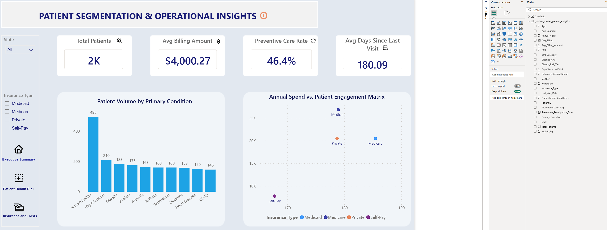
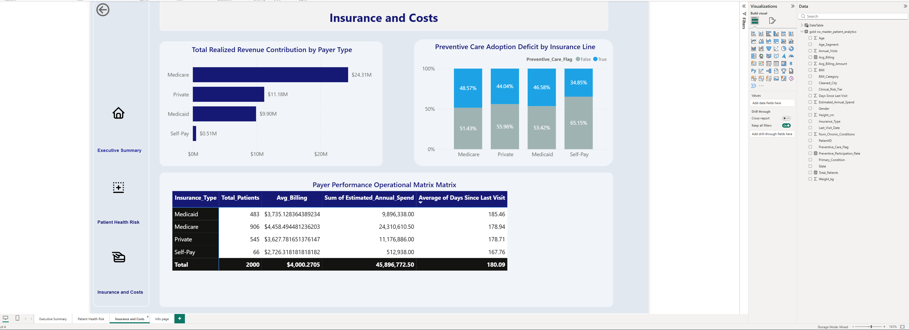
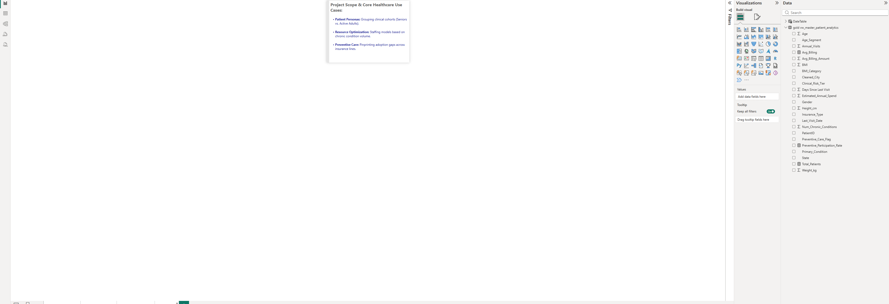
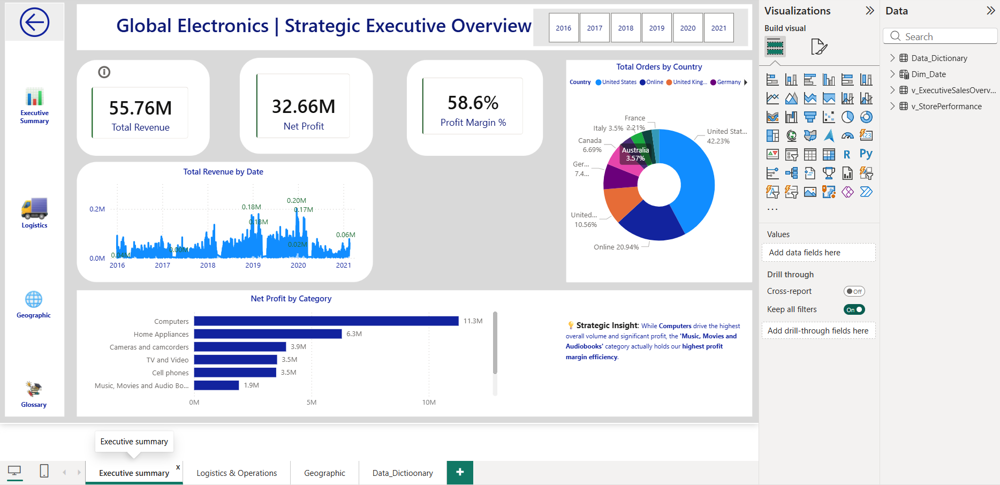
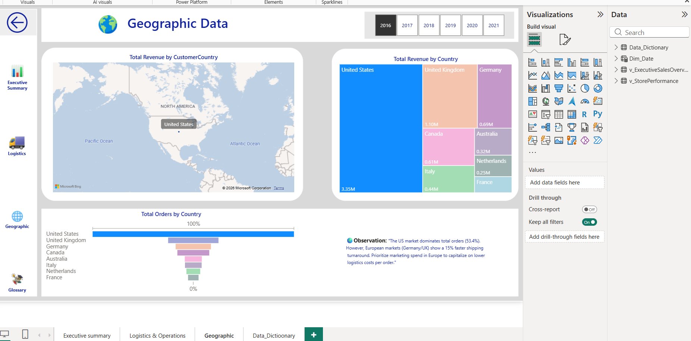
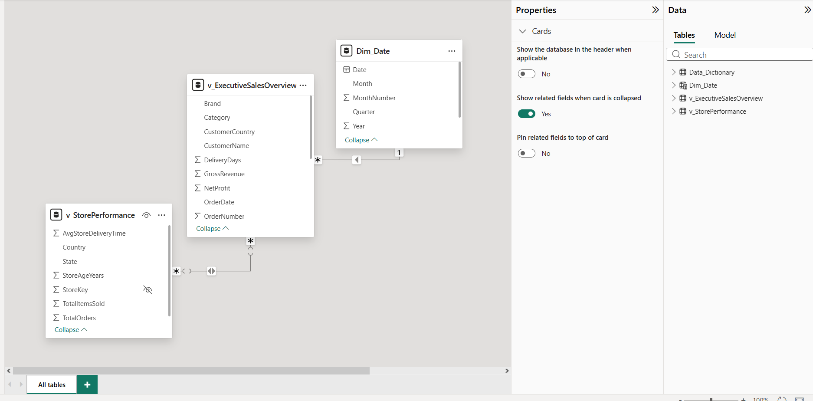
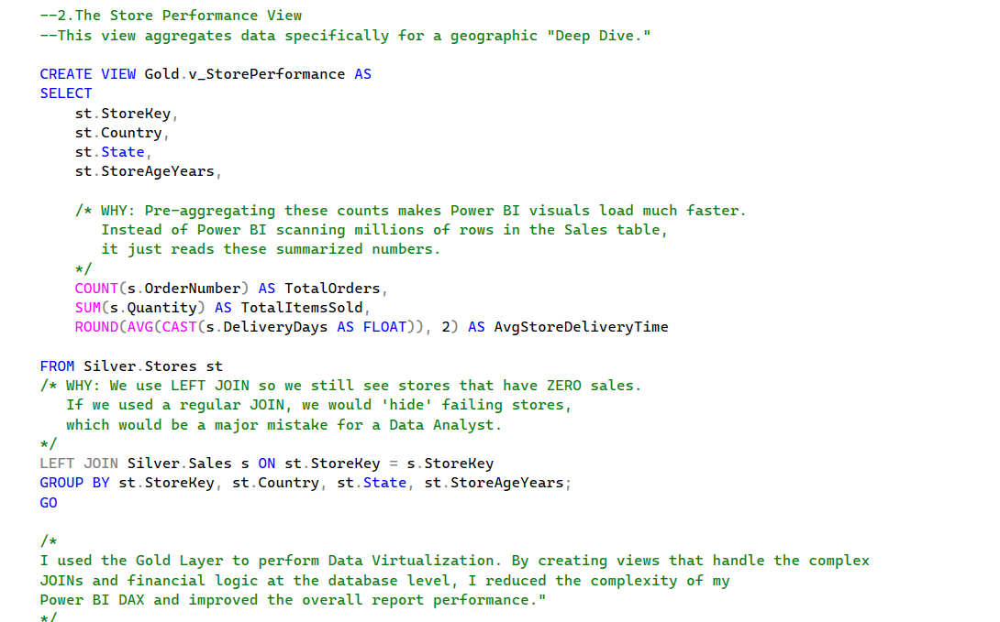

My Projects
Walmart Sourcing & Procurement Strategy Dashboard
An elegant, interactive sourcing intelligence solution designed to analyze supply chain KPIs, vendor distribution metrics, and cost optimization opportunities. This project features dynamic Excel dashboards powered by optimized Pivot Tables, advanced lookup logic, and executive-ready visual structures.

Healthcare Patient Analytics Dashboard
An end-to-end multi-page Power BI business intelligence solution engineered from a normalized SQL Server Gold layer view (`vw_master_patient_analytics`). Implements robust data modeling, custom layout design, and advanced DAX time-intelligence to optimize healthcare resource allocation.

1. Executive Insights Page
Clinical KPI cards tracking total patients and monthly admission trend analysis via DAX.

2. Clinical Risk & Demographics
Interactive medical segmentation tracking patient volume by condition risk.

3. Payer Financial Insights
Financial engagement matrix tracking payer streams and billing metrics.

4. Info/Glossary
Clean navigation project documentation.
Global Electronics Strategic BI Solution
Full-cycle data refinery process transforming raw ERP sources into high-performance executive dashboards. Captured a 47% shipping efficiency improvement and integrated a built-in Data Dictionary for logic transparency.

1. Executive Summary Dashboard
High-level revenue tracking, key operational performance KPIs, and target trends.

2. Geographic Analytics
Spatial analysis mapping customer density distributions and shipping times across regions.

3. Power BI Star Schema Model
Optimized relationships, dimension tables, and clean fact linkages for fast DAX query filtering.

4. SQL Database Engineering
Advanced T-SQL views and constraints designed to form a trusted pipeline Gold layer.
World Layoffs Analysis
Advanced data cleaning project resolving complex duplicates, missing data points, and standardizing global datasets for reliable trend forecasting.
View ScriptsCoffee Sales Data Tracking
Interactive sales ecosystem dashboards designed to track inventory turns, member status margins, and geographic revenue trends for a retail coffee enterprise.
View DashboardWalmart Sales Analysis
Exploratory data analysis (EDA) leveraging Python, Matplotlib, and Seaborn to isolate top-performing retail branches and key historical sales patterns.
View Python NotebookData Warehouse Design
Architecting database normalization models, structural schemas, and robust ETL pipelines to ensure cross-departmental data integrity.
View SchemaLEGO Evolution Analysis
A statistical time-series analysis exploring 50 years of shifting LEGO set themes, complex piece counts, and packaging transformations using Pandas data wrangling.
View CodeReady to collaborate?
Scan the code below to email me directly or click the button.
Send Email